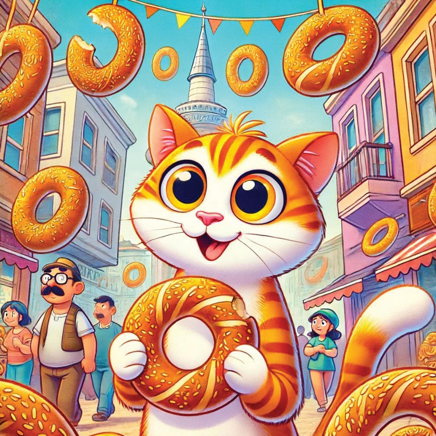
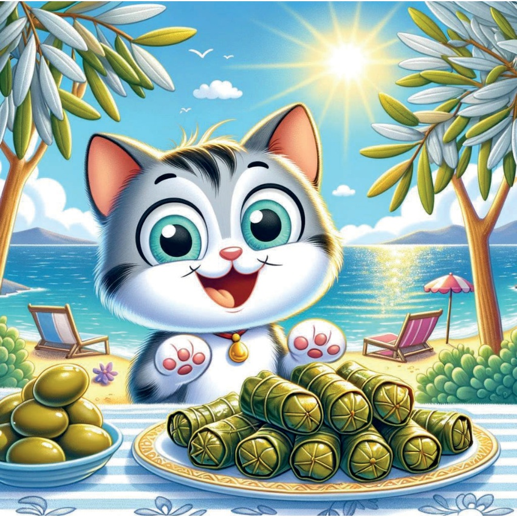
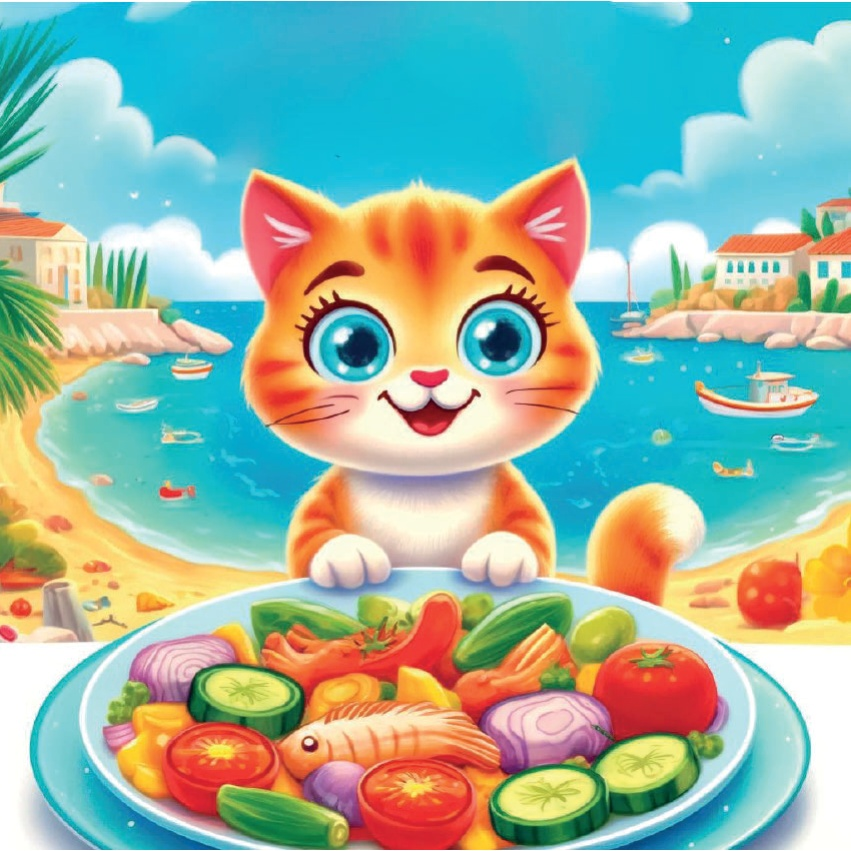
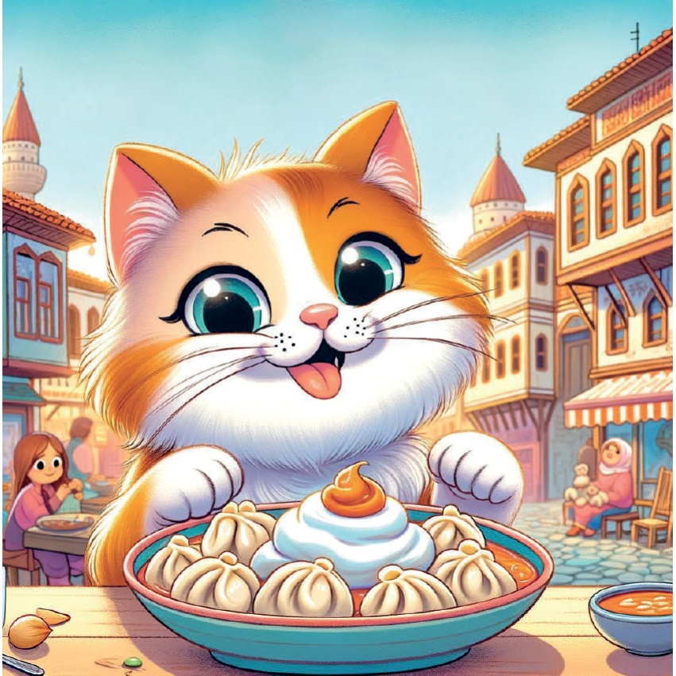
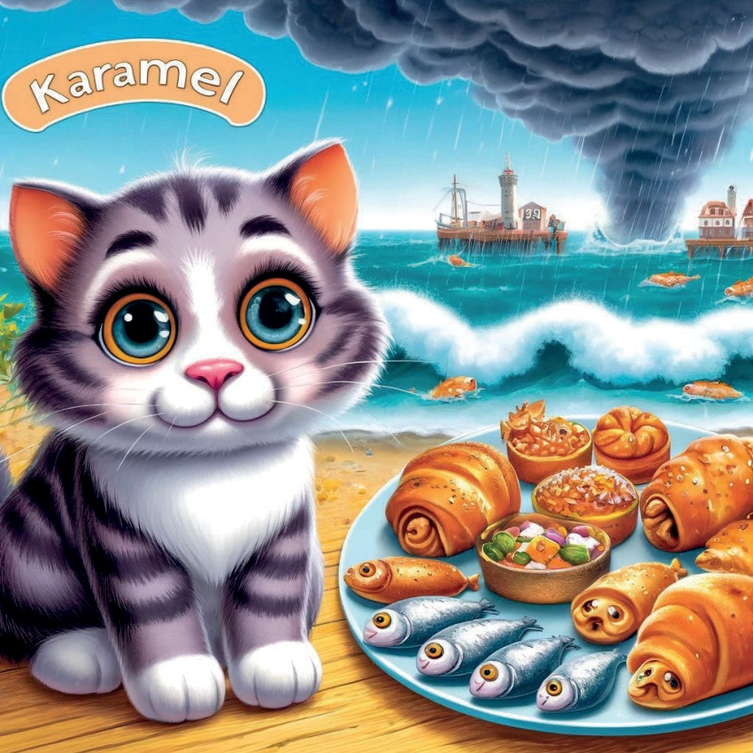
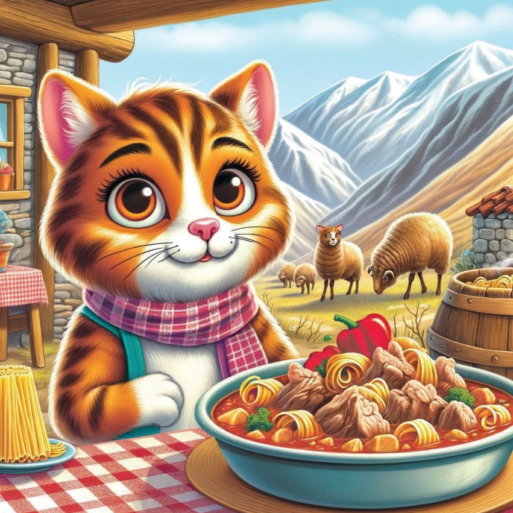
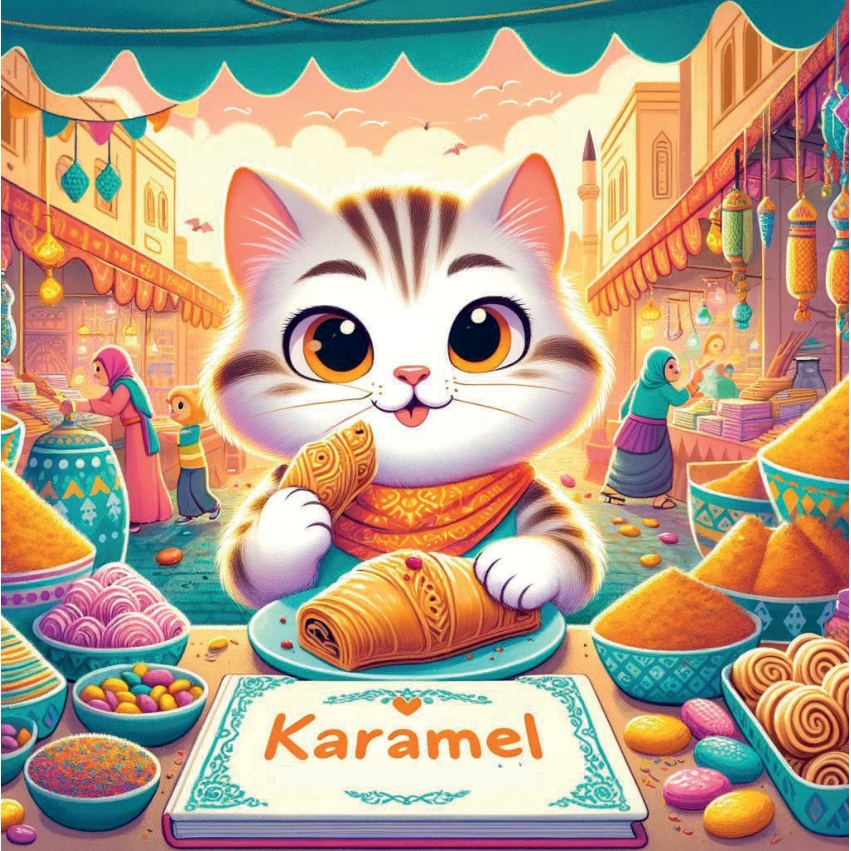

Selama masa zaman, dalam sebuah sudut dunia yang cerah bernama Turki, hiduplah seekor kucing kecil bernama Karamel.
Karamel sangat menyukai dua hal lebih dari yang lain: petualangan dan makanan enak.
Suatu hari, dia menemukan peta berwarna-warni dengan jalan berkilauan yang mengalir melalui banyak negeri berbeda di Turki.
“Ini pasti peta harta karun!” gumamnya dengan gembira.
Dia memutuskan tepat pada saat itu untuk mengikuti peta itu dan mencicipi setiap makanan lezat yang membawanya.
4
5
A Mulakan Permulaan di Istanbul
Karamel mula dia dalam jalan-jalan ramai di Istanbul,
tempat udara adalah manis dengan aroma "simit."
Ini bukan sahaja roti pinggir jalan;
itu adalah roti emas, yang dilapisi dengan biji selasih,
yang berasa renyah ketika dicoba.
“Sangat lezat!”
Karamel bersuara.
6

7
Tujuan Perjalanan Olive di Aegean
Selanjutnya, peta mengarahkan Karamel ke tepi pantai Aegean yang cerah,
dikenal karena pohon zaitunnya yang berkilau.
Dia mencoba "dolma zeytinyağlı,"
daun-daun anggur hijau berkilauan dengan minyak zaitun.
Rasanya seperti memangkan matahari itu sendiri!
8

9
Kasihan cerita di Mediterania.
Karamel bergerak ke arah pantai Mediterania.
Di sana dia menemui "şakşuka," tarian sayuran yang dicuiki dan ikan segar.
Ikan-ikan itu begitu segar, seolah-olah langsung masuk ke dalam hidangan!
10

11
Dumpling Delights in Central Anatolia
Di dalam Turki tengah,
Central Anatolia menanti hidangan bernama
“mantı.” Dumpling-dumpling kecil ini seperti
hadiah kecil: setiap satu diisi dengan daging lezat dan ditopang dengan yogurt bawang putih creamy. Karamel tidak bisa berhenti!
12

13
Pakan yang Memalukan di Laut Hitam
Saat awan menggumpal,
Karamel menemukan dirinya di wilayah Laut Hitam yang ganas.
“Hamsi” adalah bintang utama.
Bentuk-bentuk kecil ini disiapkan dengan cara yang tak terhingga: dipanggang, digoreng, bahkan dalam roti!
14

15
Makanan di Pegunungan Timur
Mencoba mendaki pegunungan yang terjal
dari Eastern Anatolia, Karamel menemukan
"kavurma," sup daging lamb yang hangat
seperti dari telinga hingga ekornya.
Penduduk setempat juga berbagi "eriste,"
pasta rumah sendiri yang sempurna
untuk malam yang dingin.
16

17
Kesan permusuhan di Semenanjung Selatan
Akhirnya,
Karamel sampai ke pemberhentian terakhirnya:
Semenanjung Selatan,
tanah rempah dan manis.
Di sini, dia mencicipi baklava yang terkenal,
sebuah kue yang begitu manis dan kaya,
seperti memakan potongan awan di saat senja.
18

19
Dengan perutnya penuh dan hatinya bahagia,
Karamel menyadari bahwa harta karunannya sebenarnya bukanlah hanya makanan yang telah ia cicipi, tetapi juga teman-temannya yang telah ia temui di sepanjang jalan.
Ia kembali ke rumah, bermimpi tentang petualangannya berikutnya di dunia yang indah Turki.